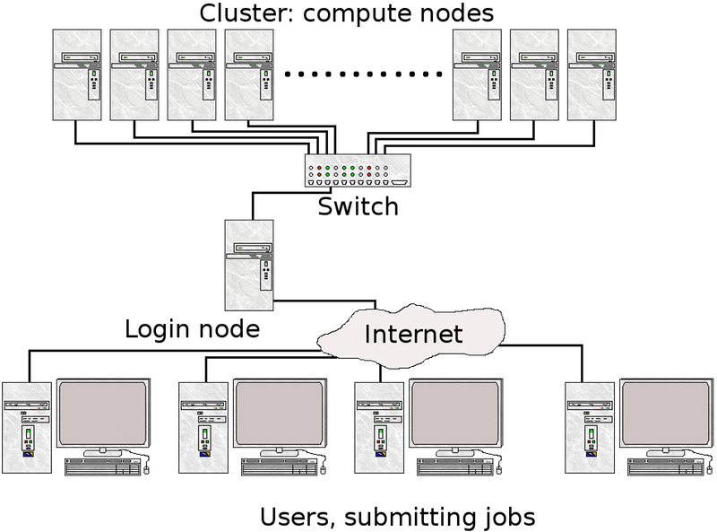

Welcome to “Using Python in an HPC environment” course material
This material
Here you will find the content of the workshop Using Python in an HPC environment.
Content
This course aims to give a brief, but comprehensive introduction to using Python in an HPC environment.
- You will learn how to
use modules to load Python
find site installed Python packages
install packages yourself
use virtual environments,
write a batch script for running Python
use Python in parallel
use Python for ML and on GPUs.
This course will consist of lectures interspersed with hands-on sessions where you get to try out what you have just learned.
Not covered
Improve python coding skills
Specifics of other clusters
We aim to give this course in spring and fall every year.
Warning
Target group
The course is for present or presumptive users at UPPMAX, HPC2N, LUNARC, NSC or possibly other clusters in Sweden.
Therefore we apply python solutions on all four clusters, so a broad audience can benefit.
We also provide links to the Python/Jupyter documentation at other Swedish HPC centres with personnel affiliated to NAISS.
Cluster-specific approaches
- The course is a cooperation between
UPPMAX (Rackham, Snowy, Bianca),
HPC2N (Kebnekaise),
and LUNARC (Cosmos).
See further below a short introduction to the centre-specific cluster architectures of UPPMAX, HPC2N, LUNARC, NSC.
How is the workshop run?
General sessions with small differences shown for UPPMAX, HPC2N, LUNARC, and NSC in tabs
Main focus on the NAISS resources at UPPMAX and NSC, but Kebnekaise/Cosmos specifics will be covered
Users who already have accounts/projects at HPC2N (Kebnekaise) or LUNARC (Cosmos) are welcome to thoses systems for the exercises. UPPMAX/Rackham and NSC/Tetralith will be used for everyone else.
Some practicals
- Code of Conduct
Be nice to each other!
- Zoom
You should have gotten an email with the links
Zoom policy:
Zoom chat (maintained by co-teachers):
technical issues of zoom
technical issues of your settings
direct communication
each teacher may have somewhat different approach
collaboration document (see below):
“explain again”
elaborating the course content
solutions for your own work
- Recording policy:
The lectures and demos will be recorded.
The questions asked per microphone during these sessions will be recorded
If you don’t want your voice to appear use:
use the collaboration document (see below)
The Zoom main room is used for most lectures
Some sessions use breakout rooms for exercises, some of which use a silent room
Q/A collabration document
- Use the Q/A page for the workshop with your questions.
Use this page for the workshop with your questions
It helps us identify content that is missing in the course material
We answer those questions as soon as possible
Warning
Please, be sure that you have gone through the `pre-requirements <https://uppmax.github.io/HPC-python/prereqs.html>`_ and `preparations <https://uppmax.github.io/HPC-python/preparations.html>`_
It mentions the familiarity with the LINUX command line.
- The applications to connect to the clusters
terminals
remote graphical desktop ThinLinc
The four HPC centers UPPMAX, HPC2N, LUNARC, and NSC
UPPMAX has three different clusters
Rackham for general purpose computing on CPUs only
Snowy available for local projects and suits long jobs (< 1 month) and has CPUs and GPUs
Bianca for sensitive data and has GPUs
HPC2N has Kebnekaise with CPUs and GPUs
LUNARC has two systems
Cosmos (CPUs and GPUs)
Cosmos-SENS (sensitive data)
NSC has one NAISS system (and several others)
Tetralith (CPUs and GPUs)
Warning
At HPC2N, UPPMAX, LUNARC, and NSC we call the applications available via the module system modules.
To distinguish these modules from the python modules that work as libraries we refer to the later ones as packages.
Briefly about the cluster hardware and system at UPPMAX, HPC2N, LUNARC, and NSC
What is a cluster?
Login nodes and calculations/computation nodes
A network of computers, each computer working as a node.
Each node contains several processor cores and RAM and a local disk called scratch.

The user logs in to login nodes via Internet through ssh or Thinlinc.
Here the file management and lighter data analysis can be performed.

The calculation/compute nodes have to be used for intense computing.
Overview of the UPPMAX systems
Overview of HPC2N’s system
Overview of LUNARC’s systems

Overview of NSC’s system
Preliminary schedule
Time |
Topic |
Content |
Teacher(s) |
|---|---|---|---|
9:00 |
Introduction to the course, log in, load/run Python, find packages |
Getting started with practical things |
All |
9:55 |
Coffee |
||
10:10 |
Install packages and isolated environments |
Install, create and handle |
Björn |
11.00 |
Short leg stretch 10m |
||
10:40 |
Reaching compute nodes with Slurm (70) |
Batch jobs vs interactive work in IDEs |
Birgitte |
~~11:50~~ |
Catch-up time and Q/A (no recording) |
||
12:00 |
LUNCH |
||
13:00-14:45 |
Analysis with Python (90m) |
Matplotlib, IDEs and plots from scripts |
Rebecca |
13.55 |
Short leg stretch 15m |
||
14.45 |
Coffee 15 min |
||
15.00 |
Using GPUs for Python (30m) |
Birgitte |
|
15:30 |
Summary + Q/A Evaluation |
||
~15.50 |
Use cases and Q/A |
Bring your own problems |
All |
Time |
Topic |
Content |
Teacher |
|---|---|---|---|
9:00 |
Analysis with Python part I (50) |
Pandas |
Rebecca |
9:50 |
Coffee |
||
10:05 |
Analysis with Python part II (50) |
Pandas & Seaborn |
Rebecca |
10.55 |
Short leg stretch |
||
11:10 |
Parallelism part I: MPI, Processes, Dask |
Processes, MPI |
Pedro |
12:00 |
LUNCH |
||
13:00 |
Big Data with Python (35) |
File formats and packages, Chunking |
Björn |
13:50 |
Short leg stretch |
||
14:05 |
Machine and Deep Learning part I (50) |
Pytorch, Tensorflow, ScikitLearn |
Jayant |
14.55 |
Coffee |
||
15:10 |
Machine and Deep Learning part II (40) |
Pytorch, Tensorflow, ScikitLearn |
Jayant |
15.50 |
Short leg stretch |
||
16.00 |
Summar and Q&A and avaluation |
||
16.20 |
Use cases and Q&A |
Bring your own problems |
All |
16.45 |
Prepare your environment now!
Log in and create a user folder (if not done already)
Please log in to Rackham, Kebnekaise, Cosmos or other cluster that you are using.
Use Thinlinc or terminal?
It is up to you!
Graphics come easier with Thinlinc
For this course, when having many windows open, it may sometimes be better to run in terminal, for screen space issues.
Prepare your environment now!
- class:
dropdown
Please log in to Rackham, Kebnekaise, Cosmos, Tetralith, or other cluster that you are using.
- For graphics, ThinLinc may be the best option.
The ThinLinc app.
- Rackham has access for regular SSH, through a regular ThinLinc client and a through a web browser interface with ThinLinc:
SSH: rackham.uppmax.uu.se
ThinLinc client: rackham-gui.uppmax.uu.se
Web browser interface: https://rackham-gui.uppmax.uu.se
- ThinLinc user guide at UPPMAX
2FA may be needed, which can be handled by logging in with regular SSH, doing 2FA, logging out again, then there is a grace period of some minutes for you to login to ThinLinc. More here:
- Kebnekaise has access for regular SSH, ThinLinc clients, and through a web browser interface with ThinLinc:
SSH: kebnekaise.hpc2n.umu.se
ThinLinc client: kebnekaise-tl.hpc2n.umu.se
From webbrowser: https://kebnekaise-tl.hpc2n.umu.se:300/
- Cosmos:
SSH: cosmos.lunarc.lu.se
- ThinLinc: cosmos-dt.lunarc.lu.se
2FA required! For more info, go here:
- Tetralith:
SSH: tetralith.nsc.liu.se
ThinLinc: tetralith.nsc.liu.se
2FA is needed. Info here about setup: <https://www.nsc.liu.se/support/2fa/>
Project
The course project on UPPMAX (Rackham) is:
naiss2024-22-1442The course project on HPC2N (Kebnekaise) is:
hpc2n2024-142The course project on LUNARC (Cosmos) is:
lu2024-2-88The course project on NSC (Tetralith) is:
naiss2024-22-1493
Make working directories
Rackham:
ssh <user>@rackham.uppmax.uu.seRackham through ThinLinc,
- use the App with
address:
rackham-gui.uppmax.uu.seNB: leave out thehttps://www.!user:
<username-at-uppmax>NB: leave out thehttps://www.!
or go to <https://rackham-gui.uppmax.uu.se>
here, you’ll need two factor authentication.
Create a working directory where you can code along. We recommend creating it under the course project storage directory
Example. If your username is “mrspock” and you are at UPPMAX, then we recommend you to create a user folder in the project folder of the course and step into that:
cd /proj/hpc-python-fallmkdir mrspockcd mrspock
Kebnekaise:
<user>@kebnekaise.hpc2n.umu.seKebnekaise through ThinLinc, use the client and put
as server:
kebnekaise-tl.hpc2n.umu.seas user:
<username-at-HPC2N>NOTE: Leave out the@hpc2n.umu.se
Create a working directory where you can code along. We recommend creating it under the course project storage directory: /proj/nobackup/hpc2-python-fall-hpc2n
Example. If your username is bbrydsoe and you are at HPC2N, then we recommend you create this folder:
/proj/nobackup/hpc-python-fall-hpc2n/bbrydsoe
Cosmos with SSH:
cosmos.lunarc.lu.seCosmos through ThinLinc:
cosmos-dt.lunarc.lu.seas server:
cosmos-dt.lunarc.lu.seas user:
<username-at-lunarc>NOTE: leave out the@lunarc.lu.se
Create a working directory where you can code along, under the storage directory. The storage directory is located under:
/lunarc/nobackup/projects/lu2024-17-44
Tetralith with SSH:
tetralith.nsc.liu.seTetralith through ThinLinc:
tetralith.nsc.liu.seas server: tetralith.nsc.liu.se``
as user:
<username-at-nsc>NOTE: leave out the@nsc.liu.seCreate a working directory where you can code along, under
/proj/hpc-python-fall-nsc.
2FA is needed. Info here about setup: <https://www.nsc.liu.se/support/2fa/>
Exercises
Stay in/go to the folder you just created above!
You can download the exercises from the course GitHub repo, under the “Exercises” directory or clone the whole repo!
Clone it with:
git clone https://github.com/UPPMAX/HPC-python.gitCopy the tarball with
wget https://github.com/UPPMAX/HPC-python/raw/refs/heads/main/exercises.tar.gzand then uncompress withtar -zxvf exercises.tar.gz
Get an overview here:
https://github.com/UPPMAX/HPC-python/tree/main/Exercises
NOTE If you downladed the tarball and uncompressed it, the exercises are under exercises/ in the directory you picked. Under that you find Python scripts in programs and batch scripts in the directories named for the sites.
NOTE If you are downloading / cloning from the course GitHub repo and into the above directory, your Python examples and batch submit file examples will be in a subdirectory of that.
Assuming you created a directory MYDIR-NAME under the project storage, you will find the examples as follows:
Python programs
/proj/hpc-python-fall/MYDIR-NAME/HPC-python/Exercises/examples/programs/
Batch submit files
/proj/hpc-python-fall/MYDIR-NAME/HPC-python/Exercises/examples/uppmax
Python programs
/proj/nobackup/hpc-python-fall-hpc2n/MYDIR-NAME/HPC-python/Exercises/examples/programs/
Batch submit files
/proj/nobackup/hpc-python-fall-hpc2n/MYDIR-NAME/HPC-python/Exercises/examples/hpc2n/
Python programs
TO_BE_DONE
Batch submit files
TO_BE_DONE
Python programs
/proj/hpc-python-fall-nsc/MYDIR-NAME/HPC-python/Exercises/examples/programs/
Batch submit files
/proj/hpc-python-fall-nsc/MYDIR-NAME/HPC-python/Exercises/examples/nsc
Content of the course
Pre-requirements:
Schedule:
Lessons day 1:
- Introduction
- Load and run python and use packages
- Install packages
- Running Python in batch mode
- Interactive work on the compute nodes
- Introduction
- The different way HPC2N, UPPMAX, LUNARC, and NSC provide for an interactive session
- Start an interactive session
- End an interactive session
- Check to be in an interactive session
- Check that the number of cores booked is correct
- Running a Python script in an interactive session
- Exercises
- Conclusion
- Loading IDEs
- Desktop On Demand
- Matplotlib in 60 Minutes
- Using GPUs with Python
- Summary
Lessons day 2: